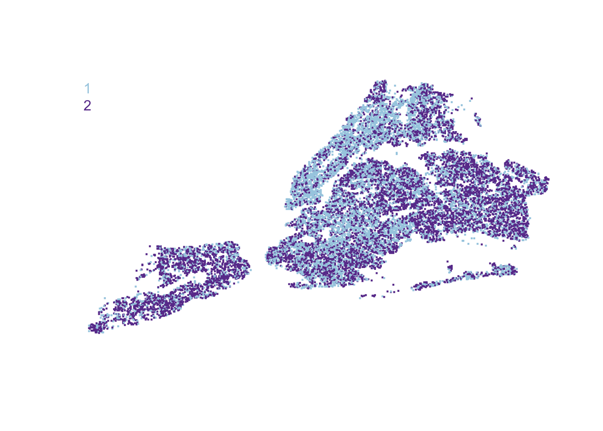

Chapter 6 Clustering
6.2 Technical Foundations
The fundamental idea of clustering methods is to express a set of attributes in two or more discrete groups. A visual inspection of the probability distribution of a data series often will give clues as to what natural clusters may lie within. For example, the bi-modal and quad-modal distributions below can be easily grouped into clear groups. Visually, the goal is to find the center of mass of sub-distributions, then assign values that are closest to a proposed center.
Figure 6.1: A multi-modal distribution naturally yield two clusters
The same visual process can easily guide clustering in two and three dimensions. Generally, greater distance between the masses – or separability – allows for less ambiguous cut offs between two groups.
Figure 6.2: Two- and three- dimensional clusters.
The task of clustering becomes complicated when subdistributions overlap in space – how to tell one from another? Imagine attempting to find clusters in four-dimensional space let alone n-dimensional space; the visual approach is no longer an option.
Figure 6.3: Case of mixed distributions
Clustering algorithms are designed to explore underlying patterns when labeled data are not available. The number of strategies used to cluster data points is as numerous as the approaches used to characterize similarity. Some methods such as k-means are focused on finding a fixed number of centroids, or finding center masses of clusters. More agglomerative approaches like hierarchical clustering examine pairwise distances between all points and group points together first in order to capture a hierarchy of relationships. While there are many other techniques, we focus on these two methods given their ease of use and versatility.
6.2.1 K-Means
The k-means clustering is a technique to identify clusters of observations by treating features as coordinates in n-dimensional space. The k in k-means is specified by the analyst – it is the number of clusters that will be returned upon running the algorithm. k is not a known quantity and will need to be optimized by the analyst.
The technique is fairly straight forward to optimize and is one that is iterative as shown in the pseudocode below:
Initialize k centroids
Repeat following until convergence:
Calculate distance between each record n and centroid k
Assign points to nearest centroid
Update centroid coordinates as average of each feature per clusterThe first step involves selecting \(k\)-number of random centroids from the feature space and giving each centroid a label. For each observation in the data, calculate the Euclidean distance ($ d(x_1,x_2) = $) to all initial centroids, then assign each point to the closest centroid. This is known as the assignment step – all points take the label of its closest centroid. It is unlikely that this initial assignment is likely suboptimal, thus the algorithm will update the centroid coordinates by calculating the mean value of each feature within each cluster. Upon doing so, this assignment-update procedure is iteratively repeated until the centroid coordinates no longer change between iterations (see illustration below).
Figure 6.4: Illustration of k-means algorithm from initialization to convergence
Central to algorithm is goal to find some set of \(k\) coordinates that minimize the within-cluster sum of squares (WSS):
\[arg min \sum_{j=1}^k\sum_{i=1}^n ||x_{i,j} - \mu_j||^2\]
where the sum of the distance \(x\) of each point \(i\) in cluster \(j\) to its corresponding centroid of \(j\). Distance is calculated in terms of all input features \(x\) and the \(j^{th}\) cluster centroid \(\mu\).
Assumptions
While k-means is a simple algorithm, its performance and effectiveness is guided by a number of key assumptions at each step of computation.
Scale. As k-means treats features as coordinates, each feature is assumed to have equal importance, which in turn means that results may be inadvertently biased simply by the scale and variances of underlying features. To remedy this problem, input features should be mean-centered standardized (\(\frac{x_i-\mu}{\sigma}\)) or otherwise transformed to reduce scaling effects. Note, however, that the influence of scaling may not always be removed. For example, a data set containing both continuous and binary features would likely perform quite poorly as Euclidean distances are not well-suited for binary. Thus, where possible, apply k-means when the formats are homogeneous, doing so using Euclidean L2-distances for continuous and binary distances for matrices of discrete features.
Missing Values. K-Means do not handle missing values as each data point is essentially a coordinate. Thus, often times k-means models are usually reserved for complete data sets.
Stability of Clusters. The initialization step of the algorithm chooses \(k\) initial centroids at random. The initial random selection is known to lead to suboptimal and unstable clusters. The instability in the results can be observed when running the algorithm for some value of \(k\) multiple times, sometimes leading to different cluster composition: holding \(k\) constant between model runs, a record \(i = 1\) may be in the same cluster as \(i = 10, 23, 40\) in one set of results, but only with \(i = 23\) in another model run. The stability of clusters may be due to a number of things, such as a suboptimal choice of \(k\), a high number features that add noise to the optimization process, among others.
Figure 6.5: Comparison of a suboptimal result and optimal result
- Choice of K. Selecting the best value of \(k\) is arguably a subjective affair: there is a lack of consensus regarding how to identify \(k\). One method known as the Elbow method chooses \(k\) at the inflection point where an additional cluster does not significantly reduce the variance explained or reduction of error. The simplest method of identifying the inflection point can be seen by plotting the percent WSS over all values of \(k\) that were tested. This approach is deceptively simple as the inflection point might not manifest itself in some data sets.
Figure 6.6: Elbow method: Choose k at the inflection point
An alternative, but far more computationally intensive approach involves calculating the silhouette, which is compares estimates the similarity of a given observation \(i\) as compared to observations within and outside the cluster. The silhouette \(s(i)\) is defined as:
\[s(i) = \frac{b_i-a_i}{max(a_i,b_i)}\]
where \(a_i\) is the Euclidean distance between a point \(i\) to other points in the same cluster, \(b_i\) is the minimum distance between \(i\) and any other cluster the sample. The values of \(s(i)\) fall between -1 and 1, where 1 indicates that an observation is well-matched with its cluster and -1 indicates that fewer or more clusters may be required to achieve a better match. Note that silhouettes do not scale well with very large data sets as a \(n \times n\) similarity matrix (e.g. distance between all points to all points). Often times, a smaller sample should be used to enable the use of this method.
For a step-by-step walkthrough of the application of the k-means algorithm, see How much of the ground is covered in [vegetation/buildings/economic activity]? in the DIY section of this chapter.
6.2.2 Hierarchical clustering
Whereas k-means initializes on random centroids, hierarchical clustering take a more computationally costly ground-up approach:
Calculate distance d between all points
All points are start as their own clusters (singletons)
Do until there is only one cluster:
Find the closest pair of clusters in terms of linkage distance
Merge into a single cluster
Recalculate distances from new cluster to all other clusters
Stop when all points are in one cluster
For a step-by-step walkthrough of the application of the hierarchical clustering algorithm, see How do I characterize the demand for [products/services]? in the DIY section of this chapter.
6.3 DIY
6.3.1 How much of the ground is covered in [vegetation/buildings/economic activity]?
Photographs contain data. Some are more structured than others. Satellite imagery, for example, can be directly used to infer patterns on the ground, especially relating to natural phenomena like agriculture. Free imagery is readily available from various satellite instruments such as Aqua/Terra MODIS (NASA), ASTER (NASA/Japan), VIIRS (NASA/NOAA), Landsat Operational Land Imager (NASA/USGS), among others. Private firms such as Digital Globe and Planet also operate their own satellites and provide commercial data services.
Suppose there is a need to know how much healthy vegetation is present in farm lands in the US heartland. Satellite imagery can easily be used to support this task. A U.S.-Japan team used the Advanced Spaceborne Thermal Emission and Reflection Radiometer (ASTER) instrument on the Terra satellite to capture images of crop fields in Kansas. The image below captures a 37.2-km x 38.8-km area where green areas indicate healthy vegetation.43
#Library
library(raster)
library(digIt)
img <- digIt("color_segment_kansas")
plotRGB(img)Figure 6.7: Crops in Finney County KS. Via NASA/GSFC/METI/Japan Space Systems, and U.S./Japan ASTER Science Team
Suppose the following question were asked:
How much of the crop field is covered in healthy vegetation?
In earth science, satellite imagery can be converted into vegetation indices, then cutoffs can be applied. The choice of a cutoff runs the risk of subjective biases. The alternative is to use k-means clustering to conduct color quantization, which is a process that reduces the number of colors in an image into fewer distinct colors.
Photographs are comprised of a three-dimensional array that essentially resembles three matrices sandwiched together. Each matrix is an \(n \times m\) matrix for each red-green-blue (RGB). The goal is to cluster on the colors, which requires the each of the \(n \times m\) matrices to be transformed into a two dimensional matrix with 3 columns (one for each color) and of length \(nm\). K-means is applied to this matrix to obtain color groups.
Getting Started
In the wild, the digIt() function is not available. An image would normally need to be downloaded and loaded as a brick() using the raster package. For simplicity, we use the digIt library to download and load the ASTER data.
#Library
library(raster)
library(digIt)
img <- digIt("color_segment_kansas")The image is converted into a matrix containing three vectors of equal length: one for each RGB value.
#Dimensions
dim(img)## [1] 2481 2589 3#Convert image into columns
data <- cbind(as.vector(img[[1]]),
as.vector(img[[2]]),
as.vector(img[[3]]))With the data in the right shape, k-means can be applied. In this example, we use the kmeans() function that is built into R:
kmeans(x, k)
where:
xis a data frame or matrix of numerical valueskis the number of clusters
The result of the kmeans() function contains a number of attributes such as the cluster assignment of each observation. To evaluate the fitness of the cluster, a silhouette statistic can be calculated using the silhouette() function in the cluster library:
silhouette(cluster, distance)
where:
clusteris the cluster assignment.distanceis a dissimilarity matrix of input features produced bydist().
Given the size of the input matrix (\(n = 2481 \times 2589 = 6423309\)), the dissimilarity matrix is produced on a sample of \(n = 20000\).
Below, k-means is tested for values of \(k = 2\) to \(k = 10\) using a random sample of \(n = 20000\). Before the loop, the sample is taken, then the dissimilarity matrix is calculated using the dist() function. Within the loop, k-means results are assigned to the object res from which the cluster assignments are extracted. The silhouette is then calculated and assigned to the sil object, from which the mean silhouette is estimated from observation level silhouettes (third column).
#Load cluster library
library(cluster)
#Calculate distance object using sample of n = 10000
set.seed(10)
subdata <- data[sample(data, 20000),]
d <- dist(subdata)
#Set up placeholder for silhouette values
sil.out <- data.frame()
#Loop through values of k
for(k in 2:10){
set.seed(20)
#Run k-means, save to o
res <- kmeans(subdata, k)
#Get silhouette
sil <- silhouette(res$cluster, d)
#Get summary values of silhouette
temp <- data.frame(k.level = k,
avg = mean(sil[,3]))
sil.out <- rbind(sil.out, temp)
}In color quantization exercises, lower values of \(k\) should be used. In the case below, the grid search suggests that \(k = 2\) provides the most favorable cluster results.
#Plot result
plot(sil.out[, c("k.level", "avg")], type = "l", col = "orange",
ylab = "Mean Silhouette", xlab = "k")
points(sil.out[, c("k.level", "avg")], pch = 19, col = "orange")Figure 6.8: Mean silhouette by k
The k-means model is then estimated on the entire data set for \(k = 2\). To visually check our results, we need to convert the vector of cluster assignments to a matrix with the same dimensions as the original image img. The matrix contains all the same information as an image, but is not in the right data class. Using raster(), the matrix can be converted into an raster image format containing cluster assignments.
#K values
set.seed(123)
res <- kmeans(data, 2)
#Convert cluster labels into matrix
mat <- matrix(res$cluster,
ncol = ncol(img),
nrow = nrow(img),
byrow = TRUE)
img2 <- raster(mat)With the data in the right form, the cluster assignments are rendered as an image. Notice that the healthy green areas are coded in green, which corresponds with cluster #2.
plot(img2, box=FALSE, yaxt = "n", xaxt = "n",
frame.plot = FALSE, col = c("black", "green"))Figure 6.9: Color quantization for k = 3
To calculate the proportion of the land that is covered in healthy vegetation as well as approximate land area, we can use the following calculation:
prop <- mean(mat == 2)
print(paste0("%Area = ", prop))## [1] "%Area = 0.482713349147612"print(paste0("km2 = ", 37.2 * 38.8 * prop))## [1] "km2 = 696.729139625697"6.3.2 How do I characterize the demand for [products/services]?
Clustering algorithms are useful for more exploratory purposes, especially for characterizing types of demand for services. In private industry, data on product consumption can be used to group types of customers and their preferences together, which in turn form the basis of customer segments. In the public sector, this is not the norm, but just because it is uncommon does not prevent it from being the norm in the future.
311 Call Centers have become common place in US cities. These citizen-facing centers triage requests for local government services and dispatch resources to address needs. 311 also has become a rich source of data on what constituents need. In New York City, millions of calls and hundreds of types of requests are logged and made public via the open data platform.
Suppose the following question were asked:
How do I characterize the demand for [products/services]?
or otherwise stated:
Which constituents share similar concerns?
Using NYC’s data, the millions of 311 requests were reprocessed into grid points in Lat/Lon with precision to three places (e.g. lat = 40.552, lon = -74.212). The data are available using the digIt library:
library(digIt)
nyc311 <- digIt("nyc311_gridded")Overall, the data set contains n = 57337 and k = 139 with features such as “general.construction/plumbing” and “sweeping/inadequate”
dim(nyc311)## [1] 57337 139 colnames(nyc311)[1:20]## [1] "lat" "lon"
## [3] "adopt-a-basket" "air.quality"
## [5] "animal.abuse" "animal.in.a.park"
## [7] "appliance" "asbestos"
## [9] "beach/pool/sauna.complaint" "best/site.safety"
## [11] "bike.rack.condition" "bike/roller/skate.chronic"
## [13] "blocked.driveway" "boilers"
## [15] "bridge.condition" "broken.muni.meter"
## [17] "broken.parking.meter" "building/use"
## [19] "bus.stop.shelter.placement" "city.vehicle.placard.complaint"Although the sample size is modest, dissimilarity matrix would yield 3.3 billion data elements (57337\(^2\)). For simplicity, we sample only \(n = 15000\) records.
nyc311.short <- nyc311[sample(1:nrow(nyc311), 15000), ]The data should be on the same scale with the same mean (0) and unit variance. We can use the scale() function to scale all features, then use the dist() function to produce a dissimilarity matrix:
dist(x, method)
where:
xis a matrix of continuous values.methodis a string value that indicates the type of dissimilarity used, which can include “binary”, “minkowski”, “euclidean” among others where the latter is the default.
For cases where the data are all binary or discrete, a binary distance may be more appropriate. For continuous values, Euclidean is the best bet.
For the 311 data, the dissimilarity matrix is based on Euclidean distance, then assigned to the object dis.mat.
#Scale columns
nyc.short <- scale(nyc311.short[,3:ncol(nyc311.short)])
#Create dissimilarity matrix using Euclidean distances
dis.mat <- dist(as.matrix(nyc.short), method = "euclidean") Finally, the hierarchical clustering algorithm can be run using the hclust() command:
hclust(d, method)
where
dis a dissimilarity matrix fromdist()methodis a string value specifying the agglomeration method, such as “single”, “complete”, “average”, “centroid”, “ward.D” among others. Note that the time to processing a data set is dependent on the complexity of the method.
Below, we pass the dis.mat object to the hclust() function is choose Ward’s D to guide agglomeration.
#Run hierarchical clustering
hc <- hclust(dis.mat, method = "ward.D") The results can be easily plotted as a dendrogram, which shows the hierarchical relationships within the data. The graph below is rendered by plotting the hc object using plot(). At the bottom of the dendrogram are all observations in the sample. Given the number of observations included, it is challenging to clearly identify each observation. As we move from the bottom to the top, vertical lines emerge and come together, representing observations and subclusters that were clustered together. Eventually, all subclusters are linked at the top. A given height in the graph indicates the cumulative number of linkages that are contained in the dendrogram up to that point.
Given all the possible clusters, the number of clusters could be determined purely based on the height. Fewer the clusters, greater the height.
par(mfrow = c(1,3))
# Draw dendrogram
plot(hc, cex = 0.001, col = "grey", main = "Dendrogram")
# Cut at k = 3
plot(hc, cex = 0.001, col = "grey", main = "k = 2")
rect.hclust(hc, k = 2, border="red")
# Cut at k = 10
plot(hc, cex = 0.001, col = "grey", main = "k = 10")
rect.hclust(hc, k = 10, border="red")Figure 6.10: Dendrogram of hierarchical clustering on gridded NYC 311 data
The sample generally appears to be cleaner cut at \(k=2\) than at higher values, thus we cut the sample into two groups using the cutree() function.
groups <- cutree(hc, k = 2)While it is easy to separate the observations into their respective clusters, the process leaves much to be desired when it comes to interpretation. Ideally, the most common characteristics could be surfaced to characterize the cluster. To do so, a custom function (clustSum) is required to calculate the mean share of each service request for each cluster and return the top X most frequent requests.
clustSum <- function(data, clusters, depth = 3, horizontal = FALSE){
# Summarize cluster variables by most frequently occurring
#
# Args:
# data: input data
# clusters: vector of cluster labels
# depth: top X most frequent variables (depth = 3 as default)
# horizontal: control format of results. FALSE means one cluster per row.
#
# Returns:
# A data frame of k-number of centroids
#
#Calculate means, rotate such that features = rows
overview <- aggregate(data, list(clusters), FUN = mean)
#Transpose data so that each row contains the mean frequency of a complaint type
overview <- as.data.frame(cbind(colnames(overview)[2:ncol(overview)],
t(overview[,2:ncol(overview)])))
#Clean up table
row.names(overview) <- 1:nrow(overview)
overview[,1] <- gsub("count.","",as.character(overview[,1]))
#Clean up values as numerics
for(i in 2:ncol(overview)){
overview[,i] <- round(as.numeric(as.character(overview[,i])),2)
}
#Get top X features
depth.temp <- data.frame()
for(i in 2:ncol(overview)){
temp <- overview[order(-overview[,i]), ]
temp <- paste("(",temp[,i], "): ", temp[,1], sep = "")
temp <- as.data.frame(matrix(temp[1:depth],
nrow = 1,
ncol = depth))
colnames(temp) <- paste0("Rank.", 1:depth)
depth.temp <- rbind(depth.temp, temp)
}
depth.temp <- cbind(data.frame(table(clusters)), depth.temp)
#Rotate?
if(horizontal == TRUE){
depth.temp <- t(depth.temp)
}
return(depth.temp)
}The result indicates that one cluster is associated with road-way conditions and the other cluster is associated with residential problems. Note that the value in parentheses indicates what proportion of a given type of service request will appear in the average grid cell in a cluster.
clustSum(nyc311.short[,3:ncol(nyc311.short)], groups, depth = 3)## clusters Freq Rank.1 Rank.2
## 1 1 7047 (0.07): heat/hot.water (0.06): noise.-.residential
## 2 2 7953 (0.1): street.condition (0.09): illegal.parking
## Rank.3
## 1 (0.05): blocked.driveway
## 2 (0.08): blocked.drivewayAs public housing tends to be clustered in New York City, one might expect to see spatial patterns in the data. The clusters are mapped back to the original grid cells and indicate that there is some degree of spatial clustering of service requests. From an operational perspective, clustering could be an analytical strategy to help field operations to employ preventive maintenance. For example, a housing unit may have heating issues and may also be suceptible to santitation issues. Knowing which requests tend to cluster together could give way to more coordinated visits, thereby reducing the amount of scheduling burden placed on customers.
#Set color palette
palette(colorRampPalette(c('#a6cee3','#6a3d9a'))(2))
#Graph lat-lons with color coding by cluster
plot(nyc311.short$lon, nyc311.short$lat, col = factor(groups),
pch = 15, cex = 0.3, frame.plot = FALSE, yaxt = 'n', ann = FALSE, xaxt = 'n')
legend(x = "topleft", bty = "n", legend = levels(factor(groups)),
cex = 1, x.intersp = 0, xjust = 0, yjust = 0, text.col=seq_along(levels(factor(groups))))
Tobler W., (1970) “A computer movie simulating urban growth in the Detroit region”. Economic Geography, 46(Supplement): 234-240.↩
https://www.nasa.gov/topics/earth/earthmonth/earthmonth_2013_01.html↩